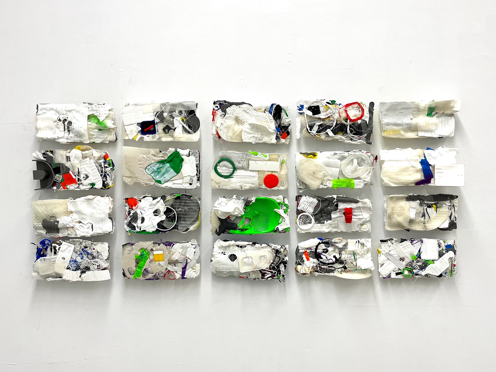
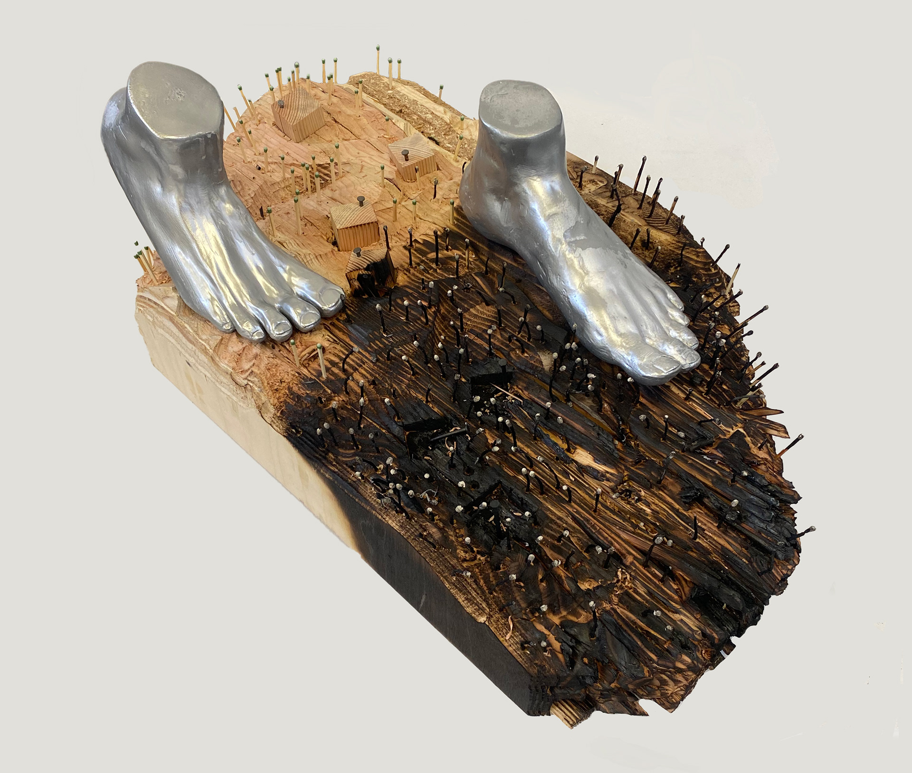

Sculpture

"20 prints"
This project took on a bigger exploration of materials and components than I initially imagined it ever
would.
Discovering a material I work with nearly every day on a deeper level. Tackling the waste associated with my
craft, and
making art out of what is normally left behind. "20 prints" is a personal reflection of my own practices and
their
impact on the environment.

"Marshall Fire"
After a wildfire burned nearly 1,100 houses the day before New Year's in my hometown. This project became an
outlet for
me to express my emotions coming back to school. The only thing left of the homes I grew up around was the
impression of
the basement and the structure of the chimney. All of the trees I loved became matches fueling the flame.
And I
learned
that even a suburban town in Colorado isn't safe from changing climates.